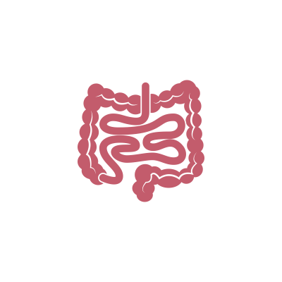

СИНДРОМ ЛИНЧА
Синдром Линча — это генетическое заболевание, которое способствует появлению рака толстой кишки. Также у больного с данным синдромом повышен риск развития опухоли и в других органах — матке, яичниках, почках, желудке, поджелудочной железе и в головном мозге. Причина болезни — мутация в одном или нескольких генах. Возраст проявления довольно ранний, в среднем — 37 лет.

Симптомы
Основные проявления заболевания связаны с появлением и ростом опухоли. Одновременно с ее увеличением появляется больше симптомов.
Клиническая картина при развитии опухоли в толстом кишечнике:
-
 боль в животе
боль в животе
- отсутствие аппетита
-  расстройства стула
-
 кровь в стуле
кровь в стуле
При активном развитии опухоли симптомы могут более яркими, например, может развиться кишечная непроходимость.
Методы диагностики
Синдром Линча — это наследственное заболевание, поэтому для его выявления изучается семейная история. Например, если у ближайших членов семьи было найдено данное заболевание, то стоит пройти генетическое тестирование, в ходе которого гены MLH1, MSH2, MSH6, PMS2 проверяются на наличие мутации.

В случае, когда генетическое исследование показало, что есть синдром Линча, человек попадает в группу с высоким риском развития рака. С этого момента он должен в течение всей жизни проходить профилактические обследования, чтобы своевременно обнаружить опухоль, если она появится. Для того чтобы выявить опухоль на ранних стадиях, как правило, сдают анализы на скрытую кровь, УЗИ, КТ и т. п.
Лечение

При раке толстой кишки удаление опухоли происходит с помощью хирургического метода. Перед операцией, как правило, осматривается вся кишка, для выявления других опухолей, которые могли возникнуть. В зависимости от характера злокачественного образования вырезается вся толстая кишка или ее часть. Если в других органах также имеются опухоли, врач продумывает тактику лечения уже в зависимости от их локализации.
Прогноз при синдроме Линча во многом зависит от интенсивности опухолевого процесса. Если пациенту удалить злокачественное образование на ранних стадиях, то можно добиться успеха и большой продолжительности жизни. Но риск рецидива всегда остается высоким, поэтому за больным наблюдают всю оставшуюся жизнь.